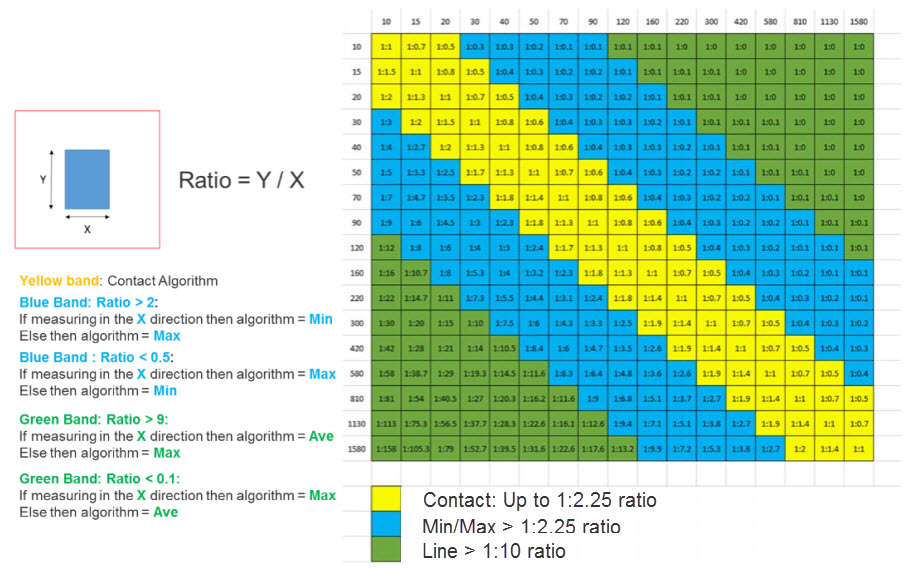
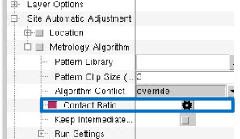
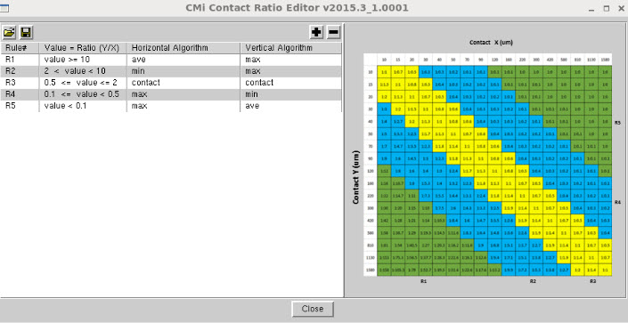

The Calibre Metrology Interface enables
you to define a single contact pattern that could be assigned multiple
algorithm values according to the pattern size ratio to improve
the consistency in recipe generation. This allows you to set the
ratios and corresponding algorithms according to your own specifications.
The following figure
shows an example contact pattern and the ratio calculation as well
as the different ratio ranges. This figure also defines the attached
algorithm for each ratio range in the horizontal and vertical measurement
direction.
Figure 1. Contact
Pattern and Ratio Calculation
You define ratio ranges and assigned algorithms to a contact
pattern through the Contact Ratio Editor in CMi. This tool gives
you the ability to define different ratio rules for the Contact pattern.
Procedure
- To invoke
the Contact Ratio Editor, in the Job Configuration area of CMi,
click the Contact Ratio radio
button under the Metrology Algorithm section to enable it.
Click the edit icon (the black wheel icon to the right
of Contact Ratio).
Figure 2. Contact
Ratio Option
Figure 3. Contact
Ratio Editor
- Each row
in the Contact Ratio Editor allows you to define rule name and the
ratio range by defining an inequality. You can also assign the algorithms
for each pattern according to the measurement direction.
The defined rules should be reflected in the Automatic
algorithm identification results that use the contact pattern; this
is done by defining TVF functions in the SV RF used for running
pattern matching. The following is an example:
proc find_algorithm { in_y in_x } {
set x [$in_x ]
set y [$in_y ]
set ratio [expr $y/$x]
if {$ratio >= 10} {
set algorithm 0
return $algorithm
} elseif {$ratio < 10 && $ratio > 2} {
set algorithm 1
return $algorithm
} elseif {$ratio <= 2 && $ratio >= 0.5}{
set algorithm 4
return $algorithm
} elseif {$ratio < 0.5 && $ratio >= 0.1}{
set algorithm 2
return $algorithm
} elseif {$ratio < 0.1}{
set algorithm 2
return $algorithm
}
}
- These rules
can be saved in an XML file format that can be loaded and used in
different sessions by clicking the floppy disk icon at the top left
of the Contact Ratio Editor. Saving a session generates an XML file
the saves the contact ratio rules. Loading session will automatically
load the contact ratio rule file.
You can optionally load alternate contact ratio sessions
by clicking the folder icon in the upper left corner of the Contact
Ratio Editor. The following is an example output XML file.
<?xml version="1.0" encoding="UTF-8"?>-<CMi_Contact_Ratio_Rules>
-<Rules>
-<Rule>
<upper_ratio/>
<upper_ratio_operator/>
<lower_ratio>10</lower_ratio>
<lower_ratio_operator>=</lower_ratio_operator>
<horziontal_algorithm>0</horziontal_algorithm>
<vertical_algorithm>2</vertical_algorithm>
</Rule>
-<Rule>
<upper_ratio>10</upper_ratio>
<upper_ratio_operator/>
<lower_ratio>2 </lower_ratio>
<lower_ratio_operator/>
<horziontal_algorithm>1</horziontal_algorithm>
<vertical_algorithm>2</vertical_algorithm>
</Rule>
-<Rule>
<upper_ratio>2</upper_ratio>
<upper_ratio_operator>=</upper_ratio_operator>
<lower_ratio>0.5 </lower_ratio>
<lower_ratio_operator>=</lower_ratio_operator>
<horziontal_algorithm>4</horziontal_algorithm>
<vertical_algorithm>4</vertical_algorithm>
</Rule>
-<Rule>
<upper_ratio>0.5</upper_ratio>
<upper_ratio_operator/>
<lower_ratio>0.1 </lower_ratio>
<lower_ratio_operator>=</lower_ratio_operator>
<horziontal_algorithm>2</horziontal_algorithm>
<vertical_algorithm>1</vertical_algorithm>
</Rule>
-<Rule>
<upper_ratio>0.1</upper_ratio>
<upper_ratio_operator/>
<lower_ratio/>
<lower_ratio_operator/>
<horziontal_algorithm>2</horziontal_algorithm>
<vertical_algorithm>0</vertical_algorithm>
</Rule>
</Rules>
</CMi_Contact_Ratio_Rules>